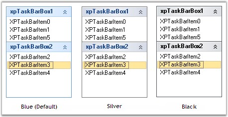
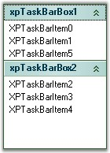

We can give Office2007 look and feel for the XPTaskBarBox control using Style property. It supports all the three Office2007 Color Schemes. Specify the color schemes in Office2007ColorScheme property.
|
[C#]
this.xpTaskBar1.Style = Syncfusion.Windows.Forms.Tools.XPTaskBarStyle.Office2007;
//Sets the Blue Color Scheme this.xpTaskBar1.Office2007ColorScheme = Syncfusion.Windows.Forms.Office2007Theme.Blue; //Sets the Silver Color Scheme this.xpTaskBar1.Office2007ColorScheme = Syncfusion.Windows.Forms.Office2007Theme.Silver; //Sets the Black Color Scheme this.xpTaskBar1.Office2007ColorScheme = Syncfusion.Windows.Forms.Office2007Theme.Black; |
|
[VB.NET]
Me.xpTaskBar1.Style = Syncfusion.Windows.Forms.Tools.XPTaskBarStyle.Office2007
'Sets the Blue Color Scheme Me.xpTaskBar1.Office2007ColorScheme = Syncfusion.Windows.Forms.Office2007Theme.Blue 'Sets the Silver Color Scheme Me.xpTaskBar1.Office2007ColorScheme = Syncfusion.Windows.Forms.Office2007Theme.Silver; 'Sets the Black Color Scheme Me.xpTaskBar1.Office2007ColorScheme = Syncfusion.Windows.Forms.Office2007Theme.Black; |

Figure 946: Office2007 Look and Feel for XPTaskBarBox
Custom Colors
We can also apply custom colors to the XPTaskBar control by setting Office2007ColorScheme to "Managed", and specifying the custom color through the ApplyManagedColors method as follows.
|
[C#]
this.xpTaskBar1.Office2007ColorScheme = Syncfusion.Windows.Forms.Office2007Theme.Managed; Office2007Colors.ApplyManagedColors(this, Color.DarkGreen); |
|
[VB.NET]
Me.xpTaskBar1.Office2007ColorScheme = Syncfusion.Windows.Forms.Office2007Theme.Managed; Office2007Colors.ApplyManagedColors(Me, Color.DarkGreen) |

Figure 947: Custom Color = "DarkGreen"